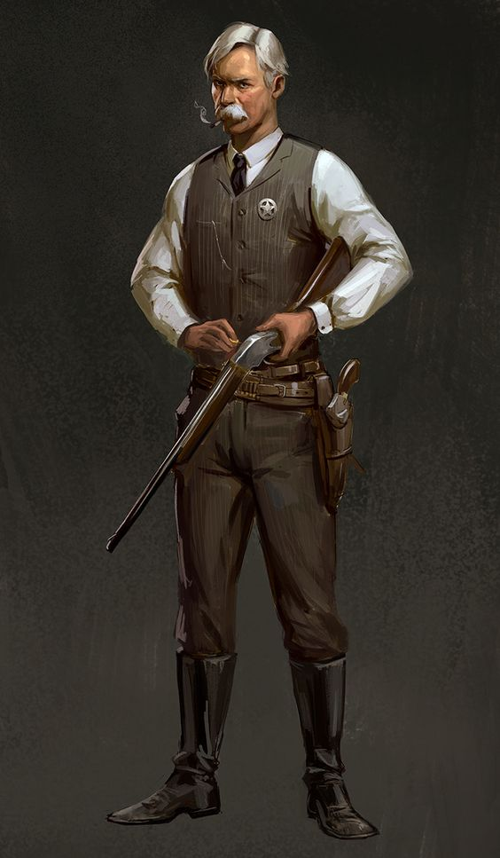

- 
-
Tommy Mosley
O xerife Tommy Mosley tenta recuperar a confiança da população solucionando o maior assalto a banco ocorrido na cidade. Com um saldo de cinco mortos e a perda de 1 milhão de dólares, desvendar quem está por trás desse crime era a única maneira de manter seu cargo. Será que Mosley conseguirá ter sucesso nessa empreitada?